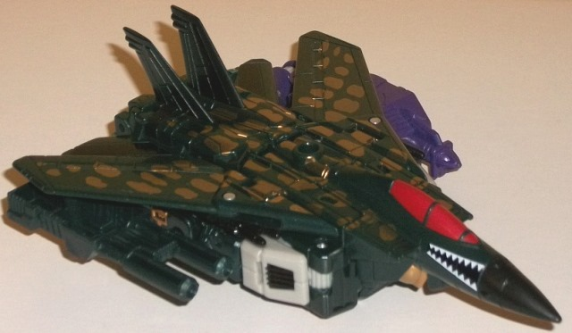

Allegiance : Predacon
Difficulty of Transformation : Very Easy
Color Scheme : Moderately light flat gray, dark purplish blue, and some silver, red, moderately dark glossy red, and orangish "cheesy" yellow
Individual Rating : 7.9
(NOTE: Because this set consists of repaints,
this is not a full-blown review. This mainly covers any changes made to
the set and the color schemes. For a review of "Thrilling 30" Scamper--
the mold used for Scorponok-- read the review of Metroplex w/ Scamper
here
.
For a review on Combiner Wars Air Raid-- the mold used for Fractyl-- read
the review
here
.)
 Scorponok
Scorponok
Allegiance
: Predacon
Difficulty of Transformation
: Very
Easy
Color Scheme
: Moderately light flat
gray, dark purplish blue, and some silver, red, moderately dark glossy
red, and orangish "cheesy" yellow
Individual Rating
: 7.9
Scorponok was a bit of
a "last-minute" addition to the TFSS 5.0 lineup, once it was realized that
these would indeed be the last figures released by FunPub. Scorponok was
the only one of the original Beast Wars cast not to have gotten a "Dawn
of Futures Past/Pre-BW" figure by this point, so they kinda shoehorned
this mold in. (That said, the "main" bio that comes with him-- one wiht
an actual card, and not on the instructions-- is from the "Beast Wars Uprising"
universe instead.) Yeah, he's tiny-- he was small in the show, but he's
definitely even smaller than that when compared to the other pre-BW Pred
toys here-- but this is about as close as they thought a current mold could
get, so here he is. As is the norm with FunPub releases, they tried to
get the color scheme and paint apps pretty much as close as possible to
the original toy, but with a few extra bits added to spice him up more.
In vehicle mode in particular he's got a lot of paint for such a little
guy. His base color plastic is a dark purplish blue, which is pretty much
how his main color looked in the BW show as opposed to the black of his
original toy. There's some red plastic on the wheels that mirrors his red
scorpion legs, and he's got some darker glossy red on his sideguns and
the small police siren. His windows are a nice silver, and his front hood
is a fairly flat gray with a nice Predacon symbol in the center. The main
new addition color-wise is the "cheese" yellow on the rear engine/lower
legs, which helps add a bit more "light" to the color scheme. It all goes
together quite well, even if the alt mode really doesn't say "Scorponok"
much beyond being a ground-based mode. The dual-barreled blaster can sorta
look like a little scorpion tail, I guess, but it's a stretch. In robot
mode more of the moderately light gray is visible on most of Scorponok's
"robot bits" on the upper arms, underneath his chest flap, and on his upper
legs. His other parts are made up of vehicle parts, so nothing new there
for robot mode. Despite not having a new head sculpt, his head is painted
INCREDIBLY well to get it much closer to Scorponok's show face than I thought
possible-- he's got the yellow visor, a gray face, and even little yellow
bits underneath the chin to simulate his scorpion mandible-like bits there.
How tiny it all is makes it all the more impressive.
No mold changes have
been made to Scorponok.
Scorponok Bio (Pre-BW version):
FUNCTION: Desert Attack Commander
Scorponok has proven to be gifted with
explosives and cyber-viruses despite an overall average intelligence. His
form has undergone several changes as he attempts to find the one that
offers the best service to Megatron. Even though his current Thunderclaw
configuration grants him high speed while his rifle can deliver a two-shot
missile blast, Scorponok desires something with a certain "sting" that
this mode lacks.
Scorponok Bio (Unclear which version):
Scorpnok first encountered Megatron
when the thug and his brother, Double Punch, were initiated into the Predaconial
criminal underworld. While Double Punch and his new partner Beeline soon
gained favor as elite assassins, Scorponok stagnated as a street-level
enforcer. Perhaps lead by jealousy of his brother, Scorponok quickly fell
under Megatron's charismatic influence.
Strength: 8.0
Intelligence: 5.0
Speed: 5.0
Endurance: 7.0
Rank: 6.0
Courage: 7.0
Fireblast: 9.0
Skill: 8.0
 Fractyl
Fractyl

Allegiance
: Predacon/Wrecker
Size
: Deluxe (packed with
Lifeline
w/ Quickslinger
)
Difficulty of Transformation to Robot
:
Easy
Difficulty of Transformation to Leg
:
Very Easy
Difficulty of Transformation to Arm
:
Very Easy
Color Scheme
: Dark dull glittery
pine green, metallic gold, light greenish gray, and some silver, black,
white, red, and dull purple
Rating
: 8.5
This release was pretty
much guaranteed as soon as
BotCon 2016 Terrorsaur
was shown-- you KNEW that headsculpt was gonna be used again, and here
it is. Pre-BW Terrorsaur has become pre-BW Fractyl (his bio has another
explanation, of course, but that's basically what this toy is). The
original
Fractyl
had a fairly basic color scheme, and this one pretty much copies
that one. His main color is a really nice shade of dull pine green-- if
it was just the shade it would be okay, but not particuarly great. However,
FunPub's put a good amount of glitter in it, so it looks semi-metallic
and quite good. He also has gold spots all over his vehicle mode to mimic
his original BotCon toy, and has some gold on his hands, lower legs, chest,
and head in his robot mode. The gold is a REALLY nice metallic shade, and
goes great with the green-- not to mention green/gold is a fairly rare
color combo on a TF. In robot mode another main color is a light greenish
gray, used mostly on the upper legs and arms, along with some details on
the waist. I'm not that fond of this color-- it's not QUITE a blah milky
gray, but the greenish gray doesn't look as good as the silvery white plastic
on the original. Just like with Terrorsaur, Fractyl has "pterodactyl-like"
details on his jet mode cockpit, including sharp "teeth" on the sides and
a red cockpit, which mimics the red eyes on the original toy. For some
accent colors, there's also just a touch of black-- mostly on the nosecone,
tailfins, and missiles, but also on the shoulders. It looks nice on the
shoulders because of the contrast, but against the dark green it doesn't
stick out that well. There's also a bit of silver on the feet and face,
and his hand/foot/gun weapon is purple. It's that color mostly to match
Impactor's HFG, but the purple used on Fractyl is just a tad duller, so
it's a slight mismatch-- but only if you look closely.
Fractyl has the same
new headsculpt as Terrorsaur-- i.e. it looks mostly good, but the smile
is a bit off. The gold, silver, and green look marvelous on it and really
draw the eye-- no complaints as far as the paint apps there. Fractyl has
no mold changes unique to this release, though.
Fractyl and Scorponok
are a mixed bag, overall. Scorponok has some nice paint apps and I really
appreciate those on the head in particular, but he's a lukewarm homage
at best, being too small and not "scorpion" enough (though I certainly
appreciate him regardless to "complete the set" before FunPub lost the
license). Fractyl is pretty much exactly what you'd have expected after
looking at FunPub's BotCon 2016 Terrorsaur-- no more, no less. He's got
a nice color scheme, but it seems more like he was used more to "fill another
slot" since they had the headsculpt as opposed to actually being a highly
requested or ingeniously-done figure.
Reviews by Beastbot